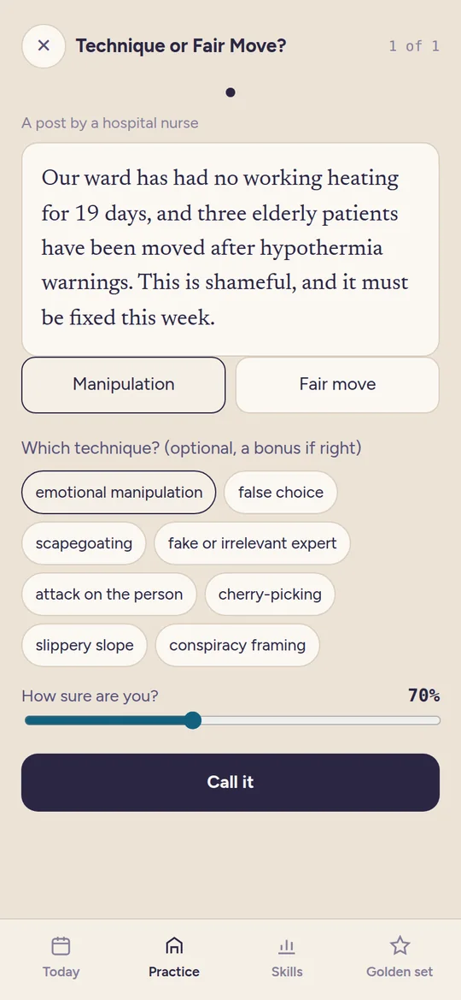
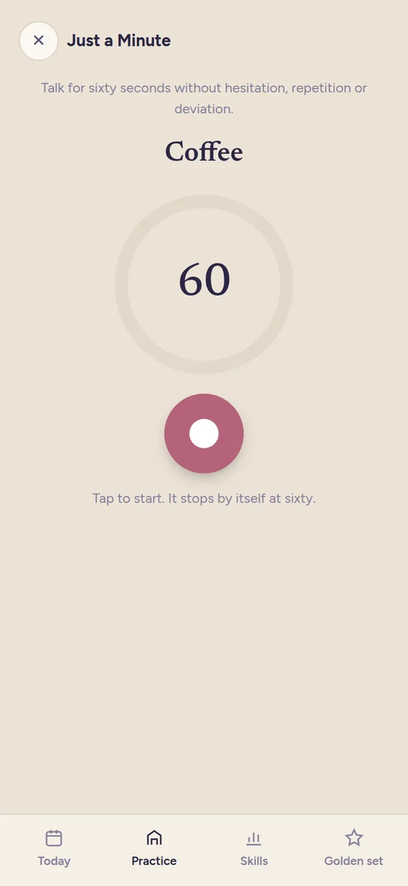
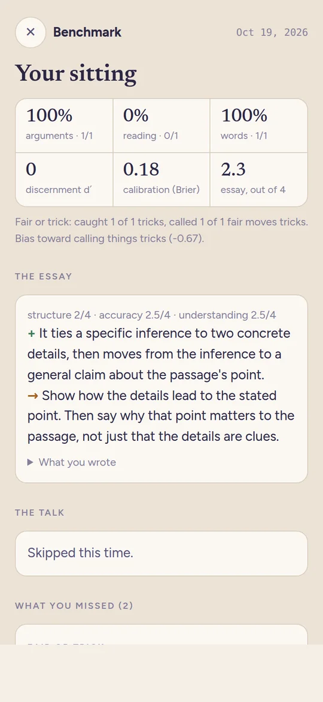
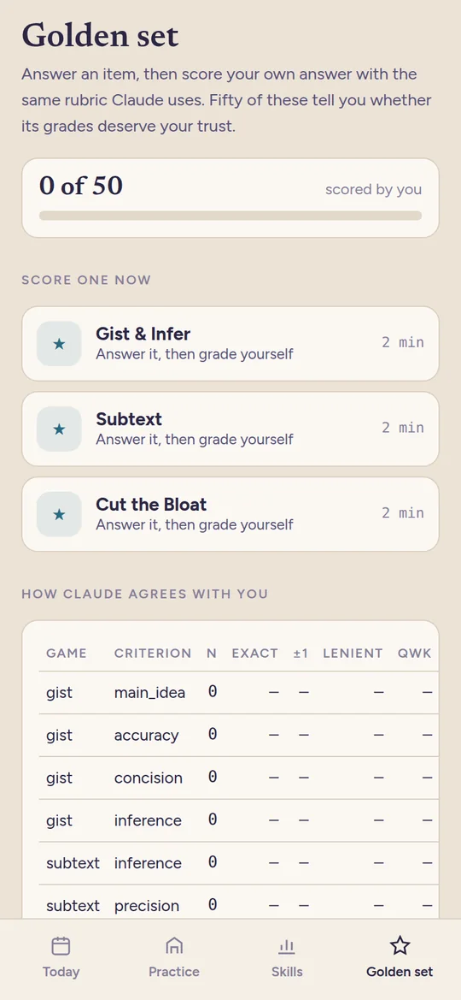

Understanding, trained on real text
Binah (Hebrew for understanding) is my daily training app for understanding what I read, weighing what I hear, and saying what I mean. You can play one of its games right here. The full app runs on my own server and Claude grades the answers, so it isn't something I can open up to everyone, but all the code is on GitHub if you want your own.
Technique or Fair Move?
Six short snippets. Half of them use a manipulation trick, and the other half make the same kind of move FAIRLY. Call each one, and if it's a trick, name it for a bonus. Games that only show you fakes just teach you to call everything fake, so the fair ones are the point.
Loading…
What the full app does
- A daily edition. Five to eight minutes, and then it's done: a recall card on yesterday's passage, one game for understanding, one for reasoning, and one for writing or speaking. There's no streak to break, only a weekly rhythm you set yourself.
- Seven games, all on real text. Write a passage's point from memory in 20 words. Say what's really going on in a scene. Tap where an argument breaks. Spot the trick. Pick the word the author actually chose. Cut a padded sentence back to what a good writer wrote. Talk for a minute without hesitating.
- Answer, verdict, revise, reference. You rate yourself first, Claude gives one strength and one thing to work on, you get ONE revision, and only then do you see the reference. The research says the learning lives in the revision.
- Honest numbers. Ratings for every skill and every item, a golden set where you grade yourself to check how far to trust Claude's grades, and a sealed test once a month to see if any of it carries over.
- Your own books. A passage engine reads your ebooks and finds good passages, so the reading games are made from books you actually own.
From the full app




Running your own
You'll need a computer that stays on, Python, and the Claude Code CLI signed in with your own Claude subscription, because that's what does the grading. A Calibre library is optional; it's what the passage engine reads. The README on GitHub walks through the rest, and there are Mac and Android apps in the repo too.
franz-rosenzweig/binah on GitHub
Code and the snippets above are under the MIT license. Nothing you do on this page leaves your browser.